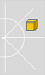
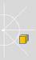
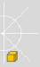

ALSonar¶
NAOqi Sensors & LEDs - Overview | API
See also
What it does¶
ALsonar module retrieves ultrasonic sensor value from ALMemory, process it and raises events according to the situation.
How it works¶
In order to save battery power, ultrasonic sensors are not activated by default.
There are 4 different ultrasonic events: SonarLeftDetected, SonarRightDetected,
SonarLeftNothingDetected, SonarRightNothingDetected.
| Case | Raised events | Description |
|---|---|---|
|  | SonarLeftDetected |
There is something in front of NAO (left side) at less than 0.5m. This means that NAO can’t go forward and has to stop and turn right to avoid the obstacle. |
|  | SonarRightDetected |
There is something in front of NAO (right side) at less than 0.5m. This means that NAO can’t go forward and has to stop and turn left to avoid the obstacle. |
|  | SonarLeftNothingDetected |
There is nothing in front of NAO nor on his left side, this means NAO can go forward or turn left. An obstacle is present on the right side at less than 0.5m but it is not a problem if NAO goes forward. |
SonarRightNothingDetected |
There is nothing in front of NAO nor on his right side, this means NAO can go forward or turn right. An obstacle is present on the left side at less than 0.5m but it is not a problem if NAO goes forward. | |
SonarLeftNothingDetected and SonarRightNothingDetected |
There is no obstacle, both SonarLeftNothingDetected and
SonarRightNothingDetected are raised at the same time. |
Note
If you want to perform your own detection with sonars you can also retrieve ultrasonic sensor values from ALMemory (find corresponding keys in Sonars). If you are not familiar with this consult getData function of ALMemory API.
Performance and Limitations¶
The obstacle detection threshold is 0.5m (it is a software threshold). Detected obstacles are seen only if the distance is less than this threshold.
The sonar values are updated by the HAL every 100ms. Hence the readable value accessible through ALMemory or the events are updated at the corresponding frequency.
Only one sonar event is raised at the same time. This is because at a given time we use both left and right ultrasonic sensor data, to determine in which situation we are so as to raise the corresponding event.
Getting started¶
Starting ultrasonic hardware
Ultrasonic sensor hardware is not started by default. To start it,
subscribe to ALSonar module (use ALSonarProxy::subscribe, inherited from
ALExtractor::subscribe).
Doing so starts the ultrasonic sensor hardware automatically.
Checking the hardware
To check that your ultrasonic sensor works properly you can start Choregraphe and launch a Sonar box. First ensure that you are connected to your real NAO hardware. Then drag and drop a sonar box in your diagram and run the behavior.
Observing the signal
When a Sonar box is launched, you can watch the signal of the ultrasonic sensor with Monitor.
Stopping ultrasonic hardware
To stop it, unsubscribe from the ALSonar module (use ALSonarProxy::unsubscribe,
inherited from ALExtractor::unsubscribe).
If there are multiple subscribers, the ultrasonic sensor hardware will remain
active as long as remains at least one subscriber.
#! /usr/bin/env python
# -*- encoding: UTF-8 -*-
"""Example: Use getData Method to Use Sonars Sensors"""
import qi
import argparse
import sys
def main(session):
"""
This example uses the getData method to use sonars sensors.
"""
# Get the services ALMemory and ALSonar.
memory_service = session.service("ALMemory")
sonar_service = session.service("ALSonar")
# Subscribe to sonars, this will launch sonars (at hardware level)
# and start data acquisition.
sonar_service.subscribe("myApplication")
# Now you can retrieve sonar data from ALMemory.
# Get sonar left first echo (distance in meters to the first obstacle).
memory_service.getData("Device/SubDeviceList/US/Left/Sensor/Value")
# Same thing for right.
memory_service.getData("Device/SubDeviceList/US/Right/Sensor/Value")
# Unsubscribe from sonars, this will stop sonars (at hardware level)
sonar_service.unsubscribe("myApplication")
# Please read Sonar ALMemory keys section
# if you want to know the other values you can get.
if __name__ == "__main__":
parser = argparse.ArgumentParser()
parser.add_argument("--ip", type=str, default="127.0.0.1",
help="Robot IP address. On robot or Local Naoqi: use '127.0.0.1'.")
parser.add_argument("--port", type=int, default=9559,
help="Naoqi port number")
args = parser.parse_args()
session = qi.Session()
try:
session.connect("tcp://" + args.ip + ":" + str(args.port))
except RuntimeError:
print ("Can't connect to Naoqi at ip \"" + args.ip + "\" on port " + str(args.port) +".\n"
"Please check your script arguments. Run with -h option for help.")
sys.exit(1)
main(session)
Use Cases¶
You can use ultrasonic sensor to perform obstacle detection.
FAQ¶
How can I start and stop my ultrasonic sensors
Please see Getting started section.
When connected to choregraphe, sonar box returns only left or nothing
Check that you are connected to your real NAO and not to the local NAOqi provided by Choregraphe.